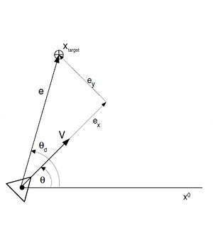
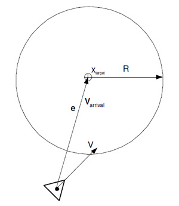
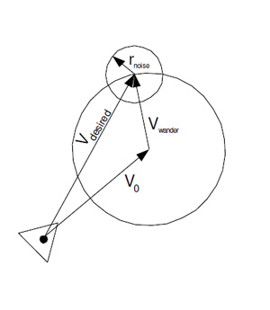
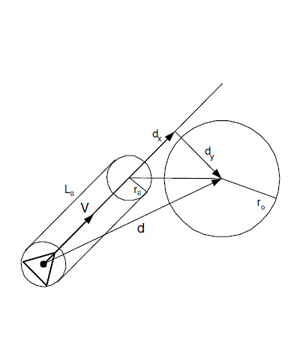

Steering Behaviors
Steering Behaviors Simulation
This project showcases a variety of steering behaviors such as flocking, wandering, and object avoidance. The concept is based on Craig Reynolds's Boids and emergent behaviors, which explores how complex behavior can arise out of a combination of relatively simple behaviors. A great example is flocking, which emerges from a simulation of separation, alignment, and cohesion.
The project was created using Processing, references used include works by Conrad Parker and Daniel Shiffman. Some interesting examples of flocking simulations can be found here.
Behavioral Simulation
The central idea behind behavioral simulation is that each agent in the swarm is treated as a single particle that carries multiple properties, such as position, velocity, orientation (and others depending on the programmer's needs). When rendering, the program iterates through each agent to compute its new steering velocity based on the agent's surroundings, then updates the agent's position for the next iteration. When updating an agent's movements, it's important to check the agent's new velocity against a maximum velocity limit. If the velocity is too big, we set it to the maximum velocity so our agent won't move too fast.
Computing the new steering velocity involves combining the velocity/orientation contributions from all applicable steering forces, such as object avoidance and flocking, the sum of those velocities and orientation angles are also kept to a user-specified upper limit.
The simplest way to combine the steering forces is through addition, but that won't work in all situations. For example, the "wander" steering force is pointing towards a wall, directly in conflict with the "avoid" steering force that is pointing away from the wall, in this case we obviously want to turn away from (or along) the wall. Many methods exist to solve this problem, from state machines to weighted sums (multiply each steering component by a user-specified weight) to fixed priority coordination (some behaviors always have priority over others based on the agent's surroundings). This program relies on a combination of weighted sum and priority coordination.
Since the goal of this project was to create a simple simulator, each agent only comes with three main attributes: position, velocity, and acceleration, all other necessary information can be (for the most part) derived from those.
Individual Behaviors
Below are some general concepts of how each individual steering behavior was implemented.
Seek/Flee
This is the most straightforward behavior to implement. After determining a target, simply find the vector pointing from the current agent position to the target, that vector is the steering force.
Fleeing works exactly like seek, except the vector is pointing from the target to the agent, so just take the seek vector and multiply it by -1.
|  |
// Seek
e = target - position;
distance = e.magnitude();
if (distance > 0) {
e.normalize();
e = e*maxspeed;
steer = e - velocity;
}
|
Arrival/Departure
Arrival and departure function much like seek and flee, except as the agent approaches the target, it slows down (for departure, the closer it is to the target, the faster it moves away).
To accomplish this, a majority of the code for seek and flee can be reused. We create a spherical zone around the target (the radius is determined by the user), as the agent moves within the circle's radius, its speed is weighed down by its distance to the target with respect to the circle's radius.
For departure (and flee as well), it's a good idea to set a radius around the target (of which the agent is fleeing from) such that the agent stops fleeing after having passed it, unless you want the agent to keep running until it's at the edge (or outside) of the simulation screen.
|  |
// Arrival
e = target - position;
distance = e.magnitude();
if (distance > 0) {
e.normalize();
if (distance < ARadius)
// Damping
e *= maxspeed*(distance/ARadius);
else
e *= maxspeed;
steer = e - velocity;
}
|
Pursue/Evade
Very simple to implement once you have seek/flee working. For the predator, use its prey's position as the target. To make the predator look smarter, you can even use the prey's current velocity and heading vector to predict where it will go (to offset the pursuit path). As for evasion, it's almost identical as pursue: the agent runs away when a predator is within a certain radius. For some interesting discussion on selfish behaviors within a flock:
A simple strategy for a predator animal is to chase the closest prey animal in its vicinity. This is reasonable because it expends the least amount of effort for the predator.
Then a strategy for a prey individual is to try to keep as far away from predators as possible: if predators only attack the closest prey individuals, then all the others should be safe. You can consider each prey individual as having a "domain of danger" surrounding it. This is the area around it comprising the points around it to which it is the closest prey. For example, a lone individual would have a "domain of danger" which is a large circle around it, whereas each individual in a pack would have a small "domain of danger" around it. Then the strategy is to reduce the "domain of danger" as much as possible. This is achieved in the pack formation, where all the prey individuals try to stay together, each one of them selfishly trying to reduce its own "domain of danger". However, the individuals on the edges of the pack have a much greater "domain of danger" than those in the interior. Thus, the individuals on the edge of the pack try to move towards the interior of the pack, which moves other individuals to the edges.
This strategy correlates well with the boids rules. Each individual boid tries to move towards the centre of mass of the pack, which very simply implements the reduction of the "domain of danger". Of course, they cannot all move to the very centre: there is a limit to the closeness of individuals, such that they all have enough room to move. This is also implemented as a rule for Boids.
Wander
Wandering simply means the agent is moving around randomly. Although it sounds simple at first, a little effort is required to produce a more realistic wandering behavior. Imagine the agent is in the center of a circle, in the simplest case, the seek algorithm can be used to steer the agent towards random points on the circumference. However, the movement from this method is too "twitchy." We want natural-looking turns and sustained orientation.
An improved method that gets rid of large erratic movements is to attach a smaller circle around the seek target from before (the one on the big circle), pick a random point on the smaller circle's circumference, then use the difference between that point and the point on the big circle as the final displacement. One could also simply pick a random point between a small positive and negative number as the displacement to achieve similar results.
In the 3D case, simply replace the circles with spheres.
|  |
// Wander
// Find center of circle
direction = velocity.normalized();
center = position + direction*length;
// Random walk
wdelta += random(-Rrad, Rrad) // Lazy...
x = Vrad*cos(wdelta);
y = Vrad*sin(wdelta);
offset = vec3(x, y);
target = center + offset;
steer = seek(target);
|
Object Avoidance
A bit harder than the others, object avoidance can be thought of as a simplified pathfinding algorithm (which in itself is a major topic).
Craig Reynolds suggested two methods. The first one places a rectangle (or a circle of a certain radius) some distance in front of the agent, then check whether that rectangle is intersecting with any obstacles. For this method, all objects in the scene should be places in a spherical (or rectangular) bounding volume for easier intersection tests.
Another way to implementing object avoidance is to first convert the object's coordinate into the agent's local coordinate (for simpler calculations), then draw a vector from the agent's position to the center of the object's bounding sphere. If the x component of that vector is greater than the rectangle's width (rectangle's x component), we know the two shapes are not intersecting, otherwise there is a potential intersection, in which case we compare the y component of each. Refer to the image for a better idea of how this is done. If there is an intersection, we calculate a vector pointing away from the object's bounding sphere using the agent's current velocity and orientation.
The second method suggested by Reynolds (which he calls "containment") tests for points a certain length directly in front of and to the left/right of the agent, if a point intersects with an object or a wall, a vector normal to the object/wall is calculated based on the location of the probe point and the intersection, and is used as the target for steering. Check here for improvements to this method using exclusion tests and fuzzy logic. Another good read on the subject is Craig Reynolds's paper Not Bumping Into Things.
Both methods have their shortcomings. The first one requires objects to be inside bounding volumes. The second one, while applicable to object of any shape, fails when the agent is facing a concave corner (for example, the corner of a room). To handle these cases one can either hard code logic for specific cases, or use a more complicated path-finding algorithm.
For this project, a very simplified avoidance algorithm based on the first method was used. Each agent has its own "avoidance sphere" with a specific radius. If an obstacle comes within the sphere, we check the direction of the agent's current velocity. If it's heading away from the object, do nothing. If it's heading toward the object, calculate a steering force that will lead the agent around or away from the object based on its current velocity, position, and heading.
|  |
// Object Avoidance
if ||dx|| <= Lb {
if ||dy|| <= rb + ro {
n = -1*d.normalize(); // Direction
e = ((rb + ro) - ||dy||)/(rb + ro)
e *= maxspeed;
steer = e*n;
}
}
|
Flocking
Flocking is probably the most popular steering behavior (and one that's been simulated to death). Unlike the previous behavioral algorithms, flocking and its constituents (namely alignment, cohesion, and separation) are group behaviors, meaning they depend on neighboring agents.
To accomplish this, we first check the position/velocity of the current agent's neighbors, then calculate the alignment, cohesion, and separation forces. Adding those forces (place more importance on certain variables by multiplying it with a larger weight constant) together will naturally result in flocking.
Separation: When an agent tries to avoid bumping into local flockmates. To do this, we go through other agents within a certain radius of our agent and accumulate the inverse (opposite) of a fraction of each agent's velocity, then add it to the current agent's velocity, so it will try to move away from where the rest of its flockmates are heading toward, but not so far as to stray from the flock.
Alignment: When an agent tries to match the velocity of its neighbor flockmates. This can be accomplished by finding the average velocity of the current agent's flockmates within a certain radius, and set that as the current agent's velocity.
Cohesion: When an agent tries to steer toward where the rest of its flockmates are heading. We accomplish this by finding the average position of the agent's current flockmates within a certain radius, and set that location as the agent's target.
A great explanation of these behaviors and their psuedocode can be found on Conrad Parker's website.
Result
Download Steering Behaviors for your operating system of choice:
Windows: [ v1.2.0 (32-bit) ] [ v1.2.0 (64-bit) ]
Mac: [ v1.2.0 ]
Linux: [ v1.2.0 (32-bit) ] [ v1.2.0 (64-bit) ] [ v1.2.0 (ARMv6 hf) ]